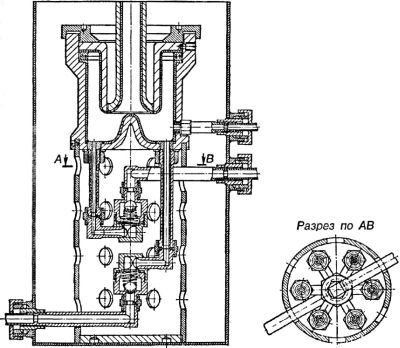
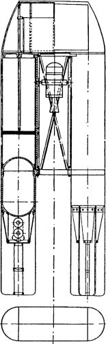
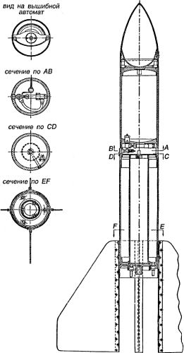

ГДЛ: укротители огня
Интерес правителей Советской России к проблеме межпланетных сообщений, чем бы он ни был вызван, весьма способствовал появлению и дальнейшему развитию сообществ энтузиастов космонавтики. В ноябре 1921 года Совет Народных Комиссаров установил пожизненную пенсию для Циолковского. В мае 1924 года образовано «Общество изучения межпланетных сообщений». В апреле 1927 года состоялось открытие первой в истории «Выставки моделей и механизмов межпланетных аппаратов» в Москве. Издаются и переиздаются труды тех, кого впоследствии назовут «пионерами ракетостроения». Проводятся конференции, читаются доклады.
Интерес коммунистических правителей к космонавтике не остался незамеченным в странах «враждебного капиталистического окружения», вызывая понятную озабоченность. А у страха, как известно, глаза велики, и порой доходило до курьезов.
Например, в 1927 году была опубликована статья некоего Б. Рустем-Бека «В два дня на Луну». Статья сообщала о фантастической телеграмме, якобы отправленной из России в Лондон: «Одиннадцать советских ученых в специальной ракете вылетают на Луну». Весьма примечательны комментарии к этому сообщению, напечатанные газетой «Дейли Кроникл»:
«На Луне некого пропагандировать, там нет населения, — писала газета. — Мы должны встретиться с другой опасностью. Если большевикам удастся достигнуть Луны, то, не встретив там никакого вооруженного сопротивления, <…> они без труда овладеют всеми лунными богатствами. Заселенная коммунистическими элементами, Луна сделается большевистской. Затраты на постройку ракеты и риск жизнями нескольких ученых — сущие пустяки в сравнении с теми колоссальными выгодами, которые можно ждать от эксплуатации материи на Луне».
И в самой России кипели страсти вокруг темы космических путешествий. Новгородская газета «Звезда» сообщала своим читателям:
«На Московском аэродроме заканчивается постройка снаряда для межпланетного путешествия. Снаряд имеет сигарообразную форму, длиной 107 метров. Оболочка сделана из огнеупорного легковесного сплава. Внутри — каюта с резервуарами сжатого воздуха. Тут же помещается особый чиститель испорченного воздуха. Хвост снаряда начинен взрывчатой смесью. Полет будет совершен по принципу ракеты: сила действия равна силе противодействия. Попав в среду притяжения Луны, ракета будет приближаться к ней с ужасной скоростью, и для того, чтобы уменьшить ее, путешественники будут делать небольшие взрывы в передней части ракеты».
На адрес Циолковского и в «Общество изучения межпланетных путешествий» приходят горы писем с просьбой записать в отряд межпланетчиков.
Раньше или позже энтузиазм населения и самих «ракетчиков» должен был принести плоды в виде формирования специальных научных групп, занимающихся исключительно исследованием вопросов космонавтики и разработкой космических аппаратов. И такие группы были созданы. Первая из них объединилась вокруг Газодинамической лаборатории, вошедшей в историю под аббревиатурой ГДЛ.
Прямой предшественницей ГДЛ являлась Лаборатория для реализации изобретений инженера-химика Николая Ивановича Тихомирова, созданная в марте 1921 года и размещавшаяся в Москве в доме № 3 по Тихвинской улице. В состав этой организации входили химическая и пиротехническая лаборатория и слесарно-механическая мастерская.
Николай Тихомиров занимался ракетным делом с 1894 года. Произведя серию опытов с пороховыми и жидкостными ракетами, он счел нужным предложить Морскому министерству проект боевой ракеты, в качестве энергоносителя которой можно было использовать не только твердое топливо — порох, но и жидкое — смеси спиртов и нефтепродуктов. Экспертиза предложения длилась с 1912 по 1917 год, когда, по понятным причинам, это дело было прекращено. Только в мае 1919 года управляющий делами Совнаркома Владимир Бонч-Бруевич получил от Тихомирова предложение реализовать его изобретение — «самодвижущуюся мину для воды и воздуха», которая, по сути дела, являлась пороховой ракетой. Тихомиров просил Бонч-Бруевича довести свое ходатайство до председателя Совнаркома Владимира Ленина. Изобретение было подвергнуто ряду новых экспертиз и только в начале 1921 года признано имеющим важное государственное значение.
К тому времени Тихомиров пришел к выводу, что применявшийся в ракетах черный дымный порох не может обеспечить ни значительной дальности, ни стабильности полета ракет. Поэтому он сосредоточил все усилия на создании принципиально нового пороха, свободного от недостатков черного. В результате упорных изысканий появился мощный, стабильно горящий бездымный пироксилиновый порох на нелетучем растворителе — тротиле. Шашки из пироксилино-тротилового пороха горели без дыма, с огромным газообразованием и вполне стабильно.
В 1925 году ГДЛ перебазировалась в Ленинград. Ее сотрудники занимались в основном разработкой ракетных двигателей: сначала — на бездымном порохе (шашки для боевых активно-реактивных снарядов, твердотопливные ускорители для самолетов), затем — на жидком.
В 1929 году в ГДЛ был организован отдел под руководством Валентина Петровича Глушко. В этом отделе был спроектирован и создан первый в истории электрический ракетный двигатель (ЭРД). Принцип действия такого двигателя был довольно прост: в камеру сгорания двигателя, снабженную соплом, подается электропроводящее вещество, через которое производится мощнейший электрический разряд; при этом проводник мгновенно переходит в газообразное состояние, и продукты сгорания вытекают через сопло, создавая реактивную тягу. Отдел Глушко провел ряд экспериментов с этим двигателем, используя в качестве электропроводящего рабочего вещества литий, бор, алюминий, магний, кремний и бериллий.
Первоначально эти опыты велись в лаборатории «Миллион вольт» академика Чернышева в Лесном, а позднее, с начала 1933 года, — на собственной экспериментальной установке, смонтированной в одном из казематов Петропавловской крепости на Неве. Установка позволяла получать энергетические дозы в виде электрических импульсов с крутым фронтом (порядка нескольких микросекунд) и амплитудой до 100000 В. Существо происходящего при этом процесса Глушко описал в своей дипломной работе следующим образом: «В рассматриваемом случае взрыв происходит вследствие быстрого перехода вещества из твердого состояния в газообразное, то есть вследствие чисто физических причин, без изменения химической структуры участвующего во взрыве вещества».
На базе идеи электрического ракетного двигателя Валентин Глушко предложил проект космического корабля «Гелиоракетоплан». Этот корабль должен был представлять собой полую сферу с кольцевым поясом ЭРД, снабжение которых электроэнергией осуществлялось посредством плоской батареи из «солнечных» термоэлементов.
Помимо столь экзотических проектов, отдел Глушко занимался разработкой жидкостных реактивных двигателей и создал целую серию их — от «ОРМ-1» по «ОРМ-52» (сокращение от «Опытный Ракетный Мотор»).
Мы не будем перебирать здесь все эти двигатели, отметим только некоторые из них, имевшие особое значение для истории космонавтики.
«ОРМ-1» стал первым советским экспериментальным ЖРД. Топливо — четырехокись азота (окислитель) и толуол (горючее); при испытании на жидком кислороде и бензине двигатель развивал тягу до 20 килограммов. Камера двигателя была плакирована изнутри медью и охлаждалась водой, заливавшейся в наружный кожух. Весь двигатель состоял из 93 деталей.

«ОРМ-1» показал себя довольно капризным двигателем, работал нестабильно, часто взрывался. В конце концов работы по двигателям с монотопливом были в ГДЛ прекращены.
В 1931–1932 годах на двигателе «ОРМ-16» группа Глушко провела более 100 огневых стендовых испытаний. В качестве окислителя использовались жидкий кислород, азотная кислота и растворы четырехокиси азота, а в качестве горючего — керосин.
Двигатель «ОРМ-48» на двухкомпонентном топливе (окислитель — азотная кислота, горючее — керосин) был разработан и испытан в 1933 году. «ОРМ-48» отличался от предыдущих моделей двигателей конструкцией сопла, которое состояло из внутренней стальной стенки с несколькими поясами спиральных ребер и внешней медной рубашки; стенка и рубашка соединялись в одно целое при помощи пайки по вершинам ребер. В полученные таким путем каналы подавалась вода с целью охлаждения конструкции. «ОРМ-48» явился прототипом современных камер сгорания со связанными оболочками.
«ОРМ-52» был наиболее мощным ЖРД, разработанным в ГДЛ и прошедшим официальные испытания в 1933 году. Он развивал тягу 250–300 килограммов и скорость истечения — 2060 м/с Топливо — азотная кислота и керосин. Масса — 14,5 килограмма.
Разумеется, двигатели создавались группой Глушко не только для экспериментальной отработки элементов конструкции и подбора оптимальных топливных смесей — всегда подразумевались какие-то проекты ракет, на которые эти двигатели будут установлены.
Одним из первых проектов, предложенных группой Глушко, стала ракета «РЛА-100» («Реактивный летательный аппарат с высотой подъема 100 километров»). Согласно проекту, стартовый вес этой ракеты должен был составлять 400 килограммов, вес азотнокислотного топлива — 250 килограммов, вес двигателя — 20 килограммов, вес полезного груза — 20 килограммов, тяга двигателя — 3000 килограммов, время работы — 20 секунд.
Ракета состояла из двух корпусов с общей головкой. Для стабилизации полета «РЛА-100» предусматривалась установка двигателя выше центра тяжести ракеты на карданном подвесе при стабилизации двигателя непосредственно гироскопом. В головной части ракеты предусматривалось размещение метеорологических приборов с парашютом и автоматом для выбрасывания их в атмосферу, а в нижней части корпуса — аккумуляторов давления со сжатым воздухом для подачи компонентов топлива в двигатель; верхние баки предназначались для окислителя, средние — для горючего. Материал баков и аккумуляторов давления — высокопрочная сталь. Нижние части корпусов несли дюралюминиевое оперение. Для определения траектории полета было предусмотрено использование разработанного для этой цели киносъемочного аппарата с секундомером, установленного в одном из хвостовых обтекателей.

В 1932 году за изготовление трех ракет «РЛА-100» взялся Мотовилихинский машиностроительный завод в городе Перми. Об огневых испытаниях одной из этих ракет рассказывает бывший сотрудник лаборатории Владислав Соколов в своей книге «Огнепоклонники»:
«С этим аппаратом связано забавное приключение. На полевые пусковые испытания прибыло из Москвы одно весьма высокопоставленное лицо. И надо же было такому случиться, что при пуске аппарата произошло искривление его стабилизатора, превратившее ракету в бумеранг. Ракета, описав дугу, помчалась в сторону пусковой позиции. Все бросились к укрытию. Первым добежало до него высокопоставленное лицо, чем убедило нас в пользе физической подготовки…»
Для ускорения летных испытаний двигателей с тягой до 300 килограммов и проверки способов старта и управления ракет в 1933 году в ГДЛ были разработаны конструкции экспериментальных ракет «РЛА-1», «РЛА-2», «РЛА-3», способные осуществить вертикальный взлет на высоту порядка 2–4 километров.
В этих ракетах предусматривалось жесткое крепление двигателей в хвостовой части ракеты; подача топлива — с помощью сжатого газа из аккумулятора давления; бак горючего размещался концентрично внутри бака окислителя.
«РЛА-1» по конструкции была наиболее простой: ее головка и хвостовое оперение — деревянные, длина — 1,88 метра, диаметр корпуса — 195 миллиметров, подача топлива в двигатель — сжатым воздухом без редуктора давления.
«РЛА-2» отличалась от первой модели использованием дюралюминиевой головки, несущей контейнер метеоприборов с парашютом, раскрытие которого предусматривалось вышибным автоматом; введением в средней части корпуса ракеты арматурного отсека с редуктором давления воздуха; применением дюралюминиевого хвостового оперения.

В 1933 году на стенде была отработана укладка парашюта в головку «РЛА-2», а также испытаны автомат для выбрасывания парашюта и арматурный отсек с редуктором давления. В связи с этим «РЛА-1» был перебран по схеме «РЛА-2» путем введения арматурного отсека и в таком виде прошел стендовые испытания в конце 1933 года
«РЛА-3» отличалась от «РЛА-2» наличием приборного отсека с двумя гироскопами с воздушным дутьем, управлявшими с помощью пневматических сервоприводов и механических тяг двумя парами воздушных рулей, размещенных в хвостовом оперении. Однако изготовление опытного образца «РЛА-3» так и не было завершено.
На все три ракеты конструкторы планировали установить двигатель «ОРМ-52».